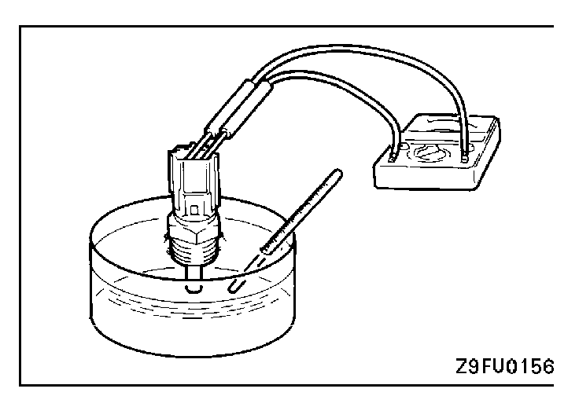
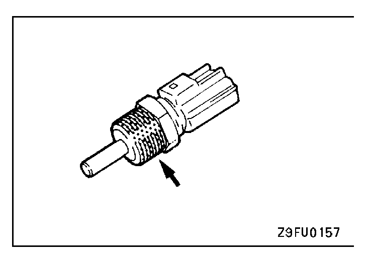

![[Previous]](https://mitsubishitechinfo.com/data/F24S/BUTTONS/fprevg.png)
![[Next]](https://mitsubishitechinfo.com/data/F24S/BUTTONS/fnextg.png)
 

ENGINE COOLANT TEMPERATURE SENSOR
CHECK
Caution
Be careful not to touch the tool against the connector (resin section) when removing and installing.
1.Remove engine coolant temperature sensor from the intake manifold.
2.With temperature sensing portion of engine coolant temperature sensor immersed in hot water, check resistance.
Temperature [°C (°F)]
Resistance (kΩ)
0 (32)
5.1 - 6.5
20 (68)
2.1 - 2.7
40 (104)
0.9 - 1.3
80 (176)
0.26 - 0.36
3.If the resistance deviates from the standard value greatly, replace the sensor.
4.Apply sealant threaded portion.
Specified sealant:
3M NUT locking Part No. 4171 or equivalent
5.Install engine coolant temperature sensor and tighten it to specified torque.
Sensor tightening torque: 30 Nm (22 ft.lbs.)
6.Fasten harness connectors securely.